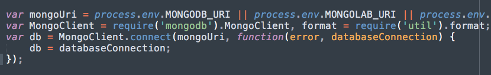
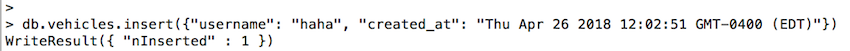
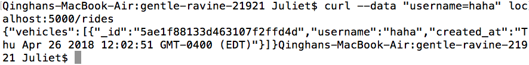

Introduction
Web security is an issue that has long been ignored by developers. I have received a web application that deals with real-time vehicle ride requests. My goal is to screen for security and privacy problems in the application.
Medthodology
Followed the suggested "Two step process method" -- First perform "black box" testing, attacking the application without reading the code; then perform "white box" testing after reading the code. I did not use an auxiliary tool like Burp in this assignment.
Abstract of Findings
In the secruity screening, I have found three major security vulnerbilities, XSS, CORS, and Sensitive data exposure, which are all common issues shared by many web applications nowaday. While these issues are relatively easy to fix, not spoting/fixing the issue may cause serious trouble in the future.
Issues Found
-
XSS
Location:
Line 35 in index.js when the application takes in user inputSeverity of the issue: high
Scripting is a powerful tool that may cause various issues. It is also a widespread and well-known web security issue that hackers may start from.Description of issue:
The application stores input from users in the database without sanitize the input. So users can perform attacks by inputing malicious scripts. Since XSS is a very common issue, it was the first thing I tried when I do "black box" testing, and the hacking was successful.
Proof of vulnerability:


Resolution:
The application should sanitize user input by using this line of code -- $ var username = request.body.username.replace(/[^\w\s]/gi, ''); -
CORS open to all websites and all HTTP methods
Location:
Line 24-30 in index.jsSeverity of the issue: medium
Access-Control-Allow-Origin: * allows everyone to use the server and may cause potential data breach. Similarly with Access-Control-Allow-Methods, the server allows various HTTP methods that are not needed and should not be allowed to execute by users. In this application for now, it is not too big an issue because the server only supports POST and GET methods. However, if the server supports more methods and anyone is allowed to delete, this will not look good.Description of issue:
I found the issue through looking at the code and the CORS header attracted my attention. I wrote a simple function that uses GET method on '/' page and prints the result to console to check if the attack is successful.

Proof of vulnerability:

Resolution:
Restrict the origin to specific domain(s) and only allow user to execute HTTP POST method -
Sensitive data exposure(Insecured database)
Location:
Line 13-17 in index.jsSeverity of the issue: high
Description of issue:
There is no admin user of authentication enabled by MongoDB. That being said, everyone can have access to MongoDB database, and any other applications in the computer can modify/corrupt the database. I used mongodb client in my terminal and insert a document that is not a vehicle
 Proof of vulnerability:
Resolution:
Secured mongodb database and add authentication after the server has connected to the database check here
Conclusion
XSS, CORS, and Sensitive data exposure are the three security vulnerablities. According to OWASP resport on Top 10 web application security vulnerablities in 2017, Sensitive data exposure is the third most common vulnerablity while XSS is the 7th. CORS, which I believe can be catagorized as Broken Access Control, is considered as the 5th most common vulnerablity. It is important for developers to really take security into account when developing applications. Nowadays, we are more and more dependent on technologies. The more information we share online, the more important cyber security is, and every developer has the responsibility to protect their application and users' data.
References
http://mchow01.github.io/docs/SOURCE2013-mchow.pdf
https://blog.websecurify.com/2014/08/hacking-nodejs-and-mongodb.html
https://www.synopsys.com/blogs/software-security/preventing-common-mean-stack-vulnerabilities/
https://lockmedown.com/securing-node-js-mongodb-security-injection-attacks/
https://www.acunetix.com/vulnerabilities/web/html-injection